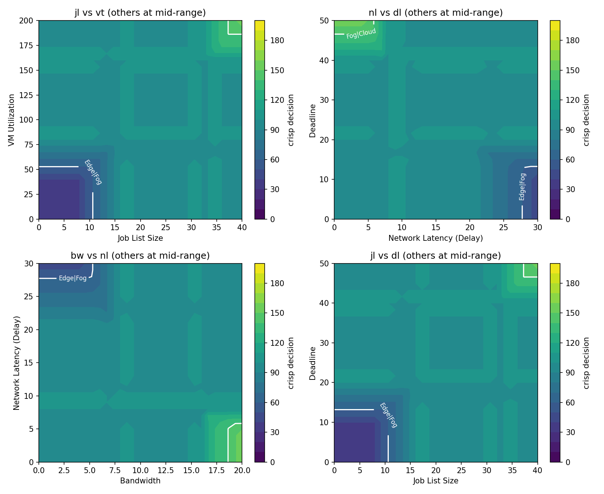
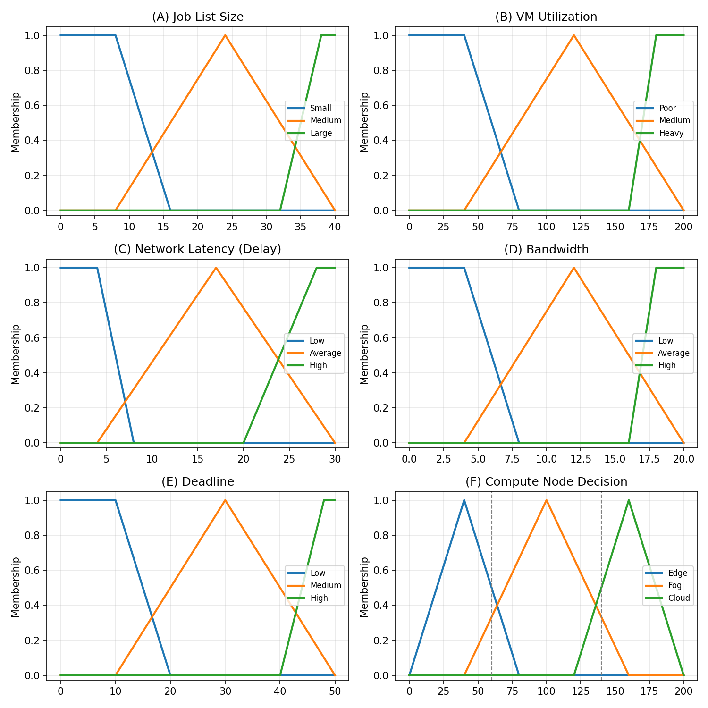
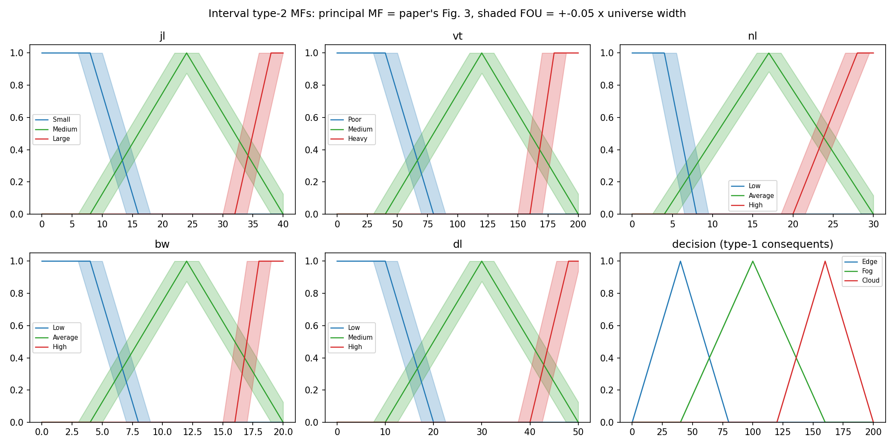
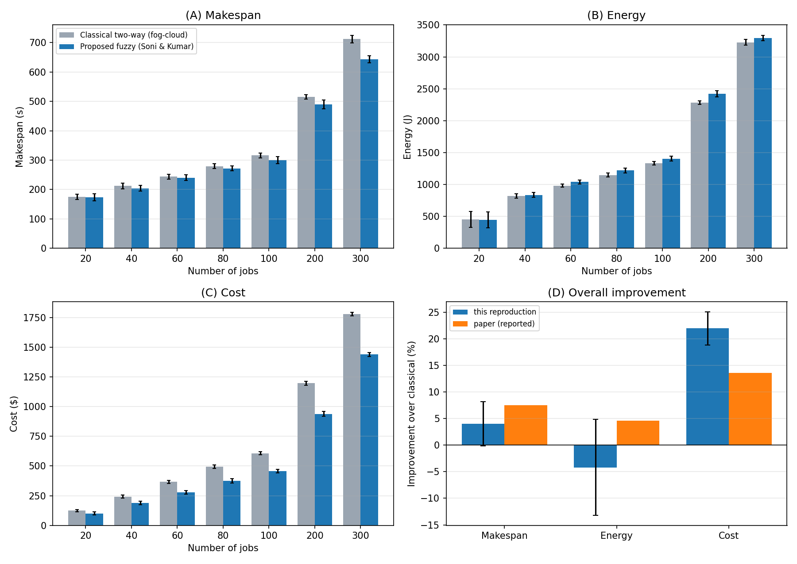
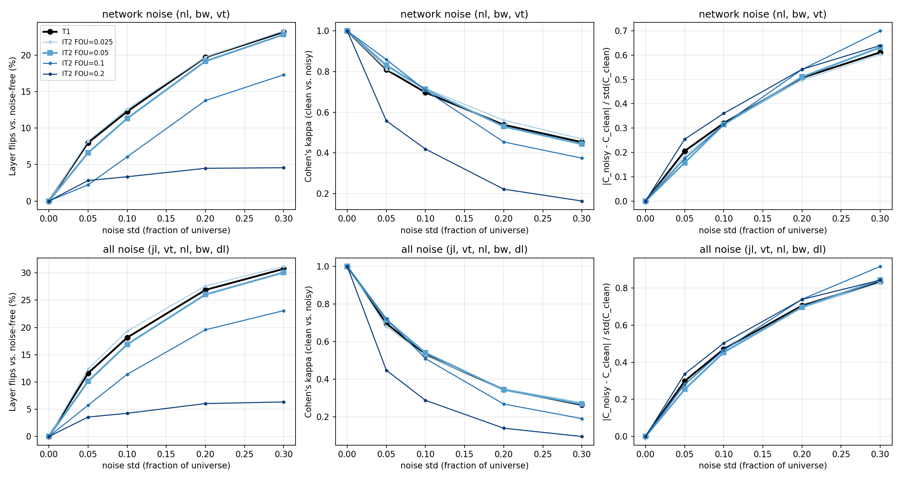
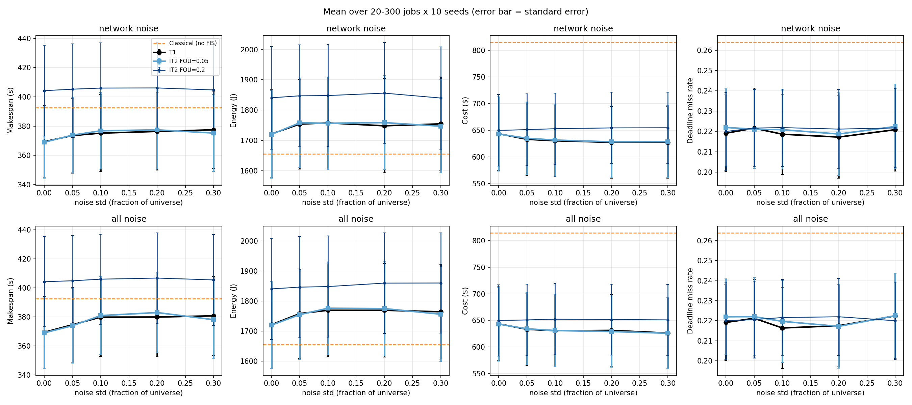
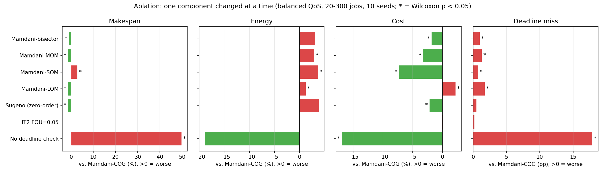
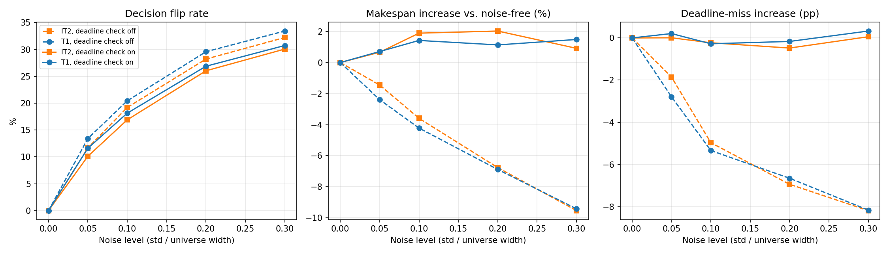

Sis Bilişimde Bulanık Mantık Tabanlı Hesaplama Aktarımı: Yeniden Üretim, Aralık Tip-2 Genişletmesi ve Ablasyon Çalışması
Zeynep Pınarlı — 1306220076
Bulanık Mantık Dersi Dönem Projesi, Güz 2026 — Kod: github.com/pinarlizeynep/bulanikMantik
Özet—Bu çalışmada Soni ve Kumar'ın (2024) sis bilişim için önerdiği bulanık mantık tabanlı hesaplama aktarımı (offloading) yöntemi Python ile sıfırdan yeniden gerçekleştirilmiş, makalenin Şekil 4 ve Tablo 4 deneyleri aynı simülatör içinde klasik iki yönlü fog–cloud yöntemine karşı 10 bağımsız tekrarla yeniden üretilmiştir. Önerilen yöntemin makespan (%4.0) ve maliyet (%21.9) kazancı yön olarak doğrulanmış, enerji kazancı ise üretilememiş (−%4.2) ve nedeni boşta güç muhasebesine bağlanmıştır. Makalenin QoS-katman eşlemesinin kendi düğüm parametreleriyle çeliştiği sayısal olarak gösterilmiştir. Özgün katkı olarak (i) makalenin Tip-1 üyelik fonksiyonlarını tek parametreli bir belirsizlik ayak izi (FOU) ile genişleten ve Karnik-Mendel tip indirgemesi kullanan bir aralık tip-2 (IT2) çıkarım sistemi, (ii) ölçüm gürültüsü altında karar kararlılığı analizi ve (iii) Sugeno ile durulaştırma yöntemlerini kapsayan bir ablasyon çalışması sunulmuştur. IT2 sistemi düşük gürültüde gürültü kaynaklı katman değişimlerini anlamlı biçimde azaltmış (%8.0→%6.6, p=0.002), QoS metriklerini ise değiştirmemiştir. Ablasyon, yöntemin başarısını taşıyan bileşenin bulanık sistemden çok algoritmadaki kesin deadline kontrolü olduğunu ortaya koymuştur.
Anahtar kelimeler—Sis bilişim, hesaplama aktarımı, Mamdani bulanık çıkarım, aralık tip-2 bulanık mantık, Karnik-Mendel, Sugeno, ablasyon, yeniden üretilebilirlik.
I. Giriş
Nesnelerin İnterneti (IoT) cihazları, kendi işlem kapasitelerini aşan iş akışlarını üretir. Bu işlerin hangi katmanda çalıştırılacağı—cihaza yakın ama zayıf edge, orta düzey fog ya da güçlü ama uzak ve pahalı cloud—tamamlanma süresini (makespan), enerji tüketimini ve parasal maliyeti doğrudan belirler [13], [14]. Karar anında yük, ağ gecikmesi ve bant genişliği sürekli değişir ve ancak gürültülü ölçümlerle bilinir. Kesin matematiksel optimizasyon bu koşullarda pahalıdır; bulanık mantık ise "gecikme yüksek ve deadline sıkı ise işi yakında tut" gibi dilsel kurallarla ucuz ve açıklanabilir kararlar verir [2].
Soni ve Kumar [1] bu motivasyonla beş girdili bir Mamdani bulanık çıkarım sistemi (FIS) ile kullanıcının zaman/enerji/maliyet tercihine göre algoritma seçen ikinci bir bulanık katman önermiş, FogWorkflowSim [4] üzerinde klasik iki yönlü fog–cloud yöntemine [3] göre makespan, enerji ve maliyette sırasıyla %7.51, %4.63 ve %13.60 iyileşme raporlamıştır. Ancak makalenin kodu, kural tabanının tamamı ve üyelik fonksiyonu (MF) değerleri paylaşılmamış, sonuçlar tekrar ve varyans olmadan verilmiştir. Ayrıca motivasyon "belirsizlik" olduğu hâlde ölçüm belirsizliğini modellemeyen Tip-1 kümeler kullanılmıştır.
Bu projenin katkıları:
Makalenin iki katmanlı bulanık karar yapısının, MIN-MIN zamanlayıcının ve Tablo 3 ortamının Python'da sıfırdan, testlerle doğrulanmış biçimde yeniden gerçekleştirilmesi; baseline'ın aynı simülatörde koşulmasıyla adil karşılaştırma.
Şekil 4 ve Tablo 4'ün 10 tohumla, eşli istatistiksel testlerle yeniden üretimi ve makaledeki iç tutarsızlıkların sayısal gösterimi.
Makalenin MF'lerini ana (principal) MF olarak koruyan, tek parametreli FOU'lu bir IT2 FIS ve gürültü altında karar kararlılığı analizi.
Çıkarım türü (Mamdani/Sugeno/IT2), durulaştırma yöntemi, deadline kontrolü ve enerji muhasebesi üzerinde bir ablasyon çalışması.
II. İlgili Çalışmalar
Fog bilişim, bulutun işlem ve depolama hizmetlerini ağın kenarına yaklaştırmak üzere Bonomi vd. [13] tarafından tanımlanmıştır. Mach ve Becvar [14], mobil edge bilişimde aktarım kararlarını gecikme ve enerji ödünleşimi açısından inceler; Kumari vd. [5] ise fog bilişimde görev aktarımı için önerilen algoritmaları ve optimizasyon tekniklerini derler.
Bulanık mantığın bu alandaki en yakın öncülü Sonmez vd.'nin [2] edge–cloud iş yükü düzenleme çalışmasıdır: Tip-1 Mamdani FIS, WAN bant genişliği, görev uzunluğu, gecikme hassasiyeti ve VM kullanımı girdileriyle görevin yerel edge, komşu edge ya da cloud'a gönderilmesine karar verir. Soni ve Kumar [1] bu fikri üç katmana ve iş akışlarına taşır, kullanıcı QoS tercihini ikinci bir bulanık katmanla ekler. Karşılaştırdıkları Khan vd. [3] ise fog ile cloud arasında iki yönlü, kesin kurallı bir yerleştirme önerir; edge'i yürütme hedefi olarak kullanmaz. Çalışmaların ortak simülasyon altyapısı WorkflowSim/FogWorkflowSim [4] ve MONTAGE gibi Pegasus iş akışlarıdır [16], [17]; katman içi zamanlama için klasik MIN-MIN sezgiseli [15] kullanılır.
Tip-2 bulanık kümeler, üyelik derecesinin kendisinin belirsiz olduğu durumlar için önerilmiştir; Liang ve Mendel [10] aralık tip-2 FLS'nin teorisini ve tasarımını, Mendel ve John [11] sezgisel bir sunumunu vermiştir. Tip indirgemenin standart yöntemi Karnik-Mendel (KM) algoritmasıdır [9]; Wu ve Mendel [12] hızlandırılmış sürümlerini önermiştir. Bildiğimiz kadarıyla [1]'in üç katmanlı offloading yapısı tip-2 kümelerle ya da ölçüm gürültüsü altında incelenmemiştir; bu çalışmanın özgün katkısı bu boşluğa yöneliktir.
Tablo I. İlgili çalışmaların karşılaştırması
Çalışma
Katman
Karar yöntemi
Ölçüm belirsizliği
Sonmez vd. [2]
Edge–Cloud
T1 Mamdani
modellenmemiş
Khan vd. [3]
Fog–Cloud
Kesin kurallar
modellenmemiş
Soni ve Kumar [1]
E–F–C
T1 Mamdani + QoS FIS
modellenmemiş
Bu çalışma
E–F–C
T1, IT2, Sugeno
IT2 FOU + gürültü deneyi
III. Teorik Altyapı
A. Bulanık kümeler ve dilsel değişkenler
Zadeh'in [6] bulanık kümesi A, evrendeki her x'e [0,1] aralığında bir üyelik derecesi μA(x) atar. Dilsel değişken (ör. "ağ gecikmesi"), terimleri (Low/Average/High) bulanık kümelerle tanımlanan bir değişkendir. Bu çalışmada makaleye uygun olarak üçgen tri(a,b,c) ve yamuk trap(a,b,c,d) MF'ler kullanılır; a=b ya da c=d durumu sol/sağ omuzdur.
B. Mamdani çıkarımı
Mamdani ve Assilian [7] tipi çıkarımda bir kural "EĞER x1 A1 VE … VE x5 A5 İSE y B" biçimindedir. Ateşleme gücü wi = mink μAk(xk); sonuç kümesi wi'de kırpılır (min), tüm kırpılmış kümeler max ile birleştirilir ve ağırlık merkezi (COG) ile durulaştırılır:
y* = ∫ y·μB'(y) dy / ∫ μB'(y) dy (1)
Ablasyonda başka durulaştırma yöntemleri de incelenir. Bisector, birleşik kümenin alanını iki eşit parçaya bölen y değeridir: ∫miny μ = ∫ymax μ. Maksimum tabanlı yöntemler yalnızca en yüksek üyelik derecesini alan noktalar kümesi P = {y : μ(y) = max μ} ile çalışır: MOM bu kümenin ortalamasını, SOM en küçüğünü, LOM en büyüğünü verir. COG ve bisector tüm kural katkılarını (alanı) hesaba katar ve girdiye göre süreklidir. Maksimum tabanlı yöntemler yalnızca en güçlü kurala bakar; bir kural diğerini geçtiğinde çıktı sıçrar.
C. Sugeno çıkarımı
Takagi-Sugeno-Kang [8] çıkarımında sonuç bir fonksiyondur; sıfırıncı derecede sabit zi'dir. Çıktı ağırlıklı ortalamadır ve integral gerektirmez:
y = Σi wi zi / Σi wi(2)
D. Aralık tip-2 bulanık mantık
Bir IT2 kümede her x'in üyeliği bir aralıktır: [μ̲(x), μ̄(x)]. Alt MF (LMF) ile üst MF (UMF) arasındaki bölge belirsizlik ayak izidir (FOU) [10], [11]. Kurallar alt ve üst dereceler için ayrı ayrı ateşlenerek bir ateşleme aralığı [f̲i, f̄i] ve bir IT2 çıktı kümesi elde edilir. Bu kümenin ağırlık merkezi bir aralıktır [yl, yr]; uçları, ayrık noktalarda alt ya da üst ağırlığın seçildiği bir anahtarlama noktasıyla bulunur:
ve yr simetrik olarak max ile tanımlanır. KM algoritması [9] anahtarlama noktasını yinelemeli olarak bulur ve sonlu adımda yakınsar. Crisp çıktı (yl+yr)/2'dir.
E. Değerlendirmede kullanılan istatistikler
İki politika aynı iş akışı ve aynı gürültü çekilişleri üzerinde koşulduğundan farklar eşlidir. Ortalama farkın sıfırdan farkı tek örneklem t-testiyle, dağılım varsayımı gerektirmeyen biçimde ise Wilcoxon işaretli sıra testiyle [18] sınanır. İki katman etiketlemesinin uyumu için Cohen κ [19] kullanılır:
κ = (po − pe) / (1 − pe), pe = Σk pktemiz · pkgürültülü(5)
Burada po gözlenen uyum oranı, pe iki etiketlemenin katman paylarından beklenen şans uyumudur. κ=1 tam uyum, κ=0 şans düzeyidir. Her kararı aynı katmana veren bir sistem po'yu yüksek tutsa da κ'yı sıfıra yaklaştırır.
IV. Referans Yöntem
Yöntem iki bulanık katmandan oluşur. QoS seçici (makalede Algoritma 1 ve Tablo 2; burada Tablo III): kullanıcının zaman (T), enerji (E) ve maliyet (C) tercihleri [0,1]'de Low/Medium/High olarak bulanıklaştırılır ve 16 kural dört algoritmadan birini seçer: A2 (maliyet→cloud), A3 (enerji→fog), A4 (zaman→edge) ve A5 (hibrit). Offloading FIS'i (Algoritma 5): A5'te her iş için beş girdi—iş listesi boyutu jl, VM kullanımı vt, ağ gecikmesi nl, bant genişliği bw, deadline dl—üçer terimle bulanıklaştırılır, 35=243 kurallık Mamdani sistemi min/min/max/COG ile [0,200]'de bir değer üretir: <60 edge, 60–140 fog, >140 cloud. Algoritma 5 ayrıca seçilen katman deadline'ı karşılamıyorsa ("dl not met") başka bir katmana geçilmesini öngörür. Katman içindeki düğümü MIN-MIN seçer. Deney ortamı FogWorkflowSim, MONTAGE iş akışı, 20–300 iş ve Tablo 3'teki düğüm parametreleridir (Tablo II).
Tablo II. Düğüm parametreleri (makale, Tablo 3)
Katman
MIPS
Up/Down (Mb/s)
Pçalışma/Pboşta (mW)
Görev/iletişim fiyatı
Cloud
1600
300 / 500
1600 / 1300
0.96 / 0.02
Fog
1300
500 / 800
800 / 40
0.48 / 0.01
Edge
1000
800 / 1000
700 / 30
0 / 0
Tablo III. QoS seçici kuralları (makale, Tablo 2; T, E, C → algoritma)
Kurallar
(T, E, C)
Algoritma
Hedef katman
R1–R3
(L,L,H) (L,M,H) (M,M,H)
A2 maliyet
Cloud
R4–R6
(L,H,L) (L,H,M) (M,H,M)
A3 enerji
Fog
R7–R9
(H,L,L) (H,L,M) (H,M,M)
A4 zaman
Edge
R10–R16
en az iki öncelik yüksek
A5 hibrit
FIS karar verir
Kümeler destekleri verilen sol omuz, üçgen ve sağ omuz olarak (L=(0,0.5], M=[0.2,0.8], H=[0.5,1]) gerçekleştirilmiş, kural gücü üç öncülün min'i, kazanan en güçlü kuraldır. Dengeli tercih (T=E=C=1/3) hiçbir kuralı ateşlemediğinden A5'e yönlendirilir. A5'te her tercih, crisp çıktıyı kendi saf algoritmasının katmanına doğru 40 birimlik bir kaymayla iter; dengeli tercihte kayma sıfırdır.
Şekil 1. Yeniden gerçekleştirilen sistemin mimarisi. Kesikli kutu, genişletmede değiştirilen bileşendir (Tip-1 Mamdani yerine IT2 ya da Sugeno); diğer tüm bileşenler ortaktır.
V. Yeniden Gerçekleştirme Yöntemi
A. Bulanık çıkarım motoru
Mamdani motoru (src/fuzzy/mamdani.py) sıfırdan yazılmış, scikit-fuzzy ile çapraz testlerle doğrulanmıştır. 243 kural bir kez dizin dizilerine derlenir; aynı sonuca giden kuralların kırptığı kümeler iç içe olduğundan birleştirme, terim başına en güçlü kuralla (243 yerine 3 kırpma) matematiksel olarak eşdeğer biçimde yapılır. Karar başına süre ~50 µs'dir.
Tablo IV, sistemin iki girdi için ürettiği kararı adım adım gösterir. Birinci örnekte (küçük kuyruk, düşük yük, yüksek gecikme, düşük bant genişliği, sıkı deadline) 243 kuraldan 8'i ateşlenir ve hepsi edge önerir; üç sistem de edge der. İkinci örnek iki katmanın sınırındadır: Mamdani 131 (fog), Sugeno 153 (cloud) üretir; IT2'nin tip indirgenmiş aralığı [110.9, 144.9] 140 eşiğini kesmektedir, yani karar belirsizdir ve orta noktası 127.9 ile fog'dur. IT2 aralığı, Tip-1'in tek sayıyla gizlediği karar belirsizliğini görünür kılar. Şekil 2, iki girdiye göre çıktı yüzeyini gösterir.
Tablo IV. Örnek kararlar (girdiler: jl, vt, nl, bw, dl)
Girdi
Mamdani COG
Sugeno
IT2 [yl, yr] → y
(10, 50, 25, 3, 8)
40.0 Edge
40.0 Edge
[38.6, 46.0] → 42.3 Edge
(35, 180, 5, 17, 45)
131.0 Fog
153.4 Cloud
[110.9, 144.9] → 127.9 Fog

Şekil 2. Mamdani FIS'in kontrol yüzeyleri (diğer girdiler orta değerde sabit).
B. Makalenin vermediği bileşenler
Üyelik fonksiyonları makalenin Şekil 3'ünden okunmuştur (Tablo VI, Şekil 3). Kural tabanı: makale yalnızca üç örnek kural (R1–R3) verir. Her terime bir yön puanı atanmıştır (cloud'a iten +1, nötr 0, edge'e çeken −1; ör. yüksek gecikme −1, yüksek bant genişliği +1); toplam puan s∈[−5,5] için s≤−2 edge, |s|≤1 fog, s≥2 cloud kuralı üretilir. Bu şema yayımlanan üç kuralı birebir üretir. Kural sayısı tam 35 olduğundan her girdi kombinasyonu en az bir kuralı ateşler; kural tabanı tamdır ve tutarlıdır (aynı öncüle sahip iki kural yoktur).
Gözlem eşlemesi: makale girdilerin adını verir, simülatör durumundan nasıl ölçüldüğünü vermez. Eşleme, makalenin min-max normalizasyonu (Denk. 23) ruhunda ham büyüklüğü bir referansa bölüp değişkenin evrenine ölçekler (Tablo V). Ölçek sabitleri yalnızca girdi dağılımlarına bakılarak, evrenlerin geniş bir kısmının kullanılması hedefiyle 0–2 numaralı tohumlarda ayarlanmış; tüm deneyler 100–109 tohumlarıyla koşulmuştur, böylece sonuç metriklerine bakarak ayar yapılmamıştır. Tablo 3 ortamında bant genişliği statik olduğundan bw pratikte üç değer alır (cihazdan yükleme, edge/fog'dan aktarım, veri zaten cloud'da); kararları ağırlıklı olarak jl, vt ve dl yönlendirir. Politikanın tam karar akışı Algoritma 1 ve Şekil 1'de özetlenmiştir.
Tablo V. Simülatör durumundan FIS girdilerine eşleme
Girdi
Ölçülen büyüklük
Ölçek
jl
Hazır kuyruktaki görev sayısı
40'a kırpılır
vt
Edge+fog düğüm kuyruğu + henüz atanmamış bekleyen iş
60 s = %100
nl
Görev verisinin cloud'a ve fog'a ulaşma süresi farkı
0.25 s = 30
bw
En iyi cloud düğümüne darboğaz hız min(Upkaynak, Downhedef)
800 Mb/s = 20
dl
Görevin süre payı (deadline − hazır olma)
s, 50'ye kırpılır
Algoritma 1. Hazır bir görev için katman kararı (FuzzyOffloadingPolicy)
1 a ← QoS_seçici(T, E, C) // Tablo III
2 eğer a ∈ {A2, A3, A4}: L ← hedef_katman(a)
3 değilse: // A5, hibrit
4 x ← gözlem(simülatör durumu) // Tablo V
5 c ← FIS(x) + 40·Σ tercih·konum / (T+E+C)
6 L ← Edge (c<60) | Fog (60≤c≤140) | Cloud (c>140)
7 eğer L yerel edge değil ve EFT(L) > deadline
ve ∃L': EFT(L') ≤ deadline: // "dl not met"
8 L ← argminL' EFT(L')
9 MIN-MIN, görevi L içindeki en erken bitiren düğüme atar
Tablo VI. Şekil 3'ten okunan MF parametreleri
Değişken
Evren
Düşük
Orta
Yüksek
jl
[0,40]
trap(0,0,8,16)
tri(8,24,40)
trap(32,38,40,40)
vt
[0,200]
trap(0,0,40,80)
tri(40,120,200)
trap(160,180,200,200)
nl
[0,30]
trap(0,0,4,8)
tri(4,17,30)
trap(20,28,30,30)
bw
[0,20]
trap(0,0,4,8)
tri(4,12,20)
trap(16,18,20,20)
dl
[0,50]
trap(0,0,10,20)
tri(10,30,50)
trap(40,48,50,50)
Çıktı
[0,200]
E: tri(0,40,80)
F: tri(40,100,160)
C: tri(120,160,200)

Şekil 3. Makalenin Şekil 3'ünden okunan girdi ve çıktı üyelik fonksiyonları (60 / 140 eşikleri çıktı panelinde).
C. Simülatör ve baseline
FogWorkflowSim ve makalenin kurulumu paylaşılmadığından Tablo 3'ü kullanan bir Python simülatörü yazılmıştır. Her katmanda iki düğüm vardır; aktarım süresi gecikme + 8·MB/min(Upkaynak, Downhedef) ile hesaplanır. MONTAGE üreteci gerçek Pegasus yapısını (mProjectPP→mDiffFit→…→mJPEG) izler ve tam N görev üretir; N=25 için gerçek Montage_25 ile aynı yapıyı verir. Görevler hazır olduğunda politikaya bir kez sorulur, MIN-MIN izin verilen düğümler arasında en erken bitişi seçer. Makespan son bitiş − ilk başlangıç (makale Denk. 12), enerji yalnızca iş çalıştıran düğümlerin çalışma ve boşta enerjisi, maliyet çalışma süresi × görev fiyatı + alınan MB × iletişim fiyatıdır. Baseline [3], fog'u önceleyen, deadline'ı karşılanamıyorsa cloud'a çıkan iki yönlü kesin kural olarak aynı simülatörde gerçekleştirilmiştir. Böylece makalenin baseline sonuçlarını başka bir simülatörden alması sorunu giderilmiştir.
D. Makaleden sapmalar
Makalenin sustuğu ya da çeliştiği noktalarda seçimlerimiz kodda belgelenmiştir: görev başına süre payı ("15 birim deadline" birimsizdir); Tablo 3'teki sabit MIPS (Bölüm 2.1'deki 1200–1600 rastgele aralığı yerine); Denk. 16–18'deki "offloading vs. yerel çalıştırma" koşulunun yalnızca deadline kısmı (IoT cihaz parametresi verilmemiştir); Alg. 5'teki λ1–λ3 yerine yayımlanmış 60/140 eşikleri; Tablo 2'nin kapsamadığı dengeli tercih için A5.
VI. Önerilen Genişletme
A. Gerekçe
Makale bulanık mantığı belirsizlikle gerekçelendirir, ancak Tip-1 MF'de 7.9 ms'lik bir gecikme ölçümü "Low" kümesine tek bir kesin dereceyle aittir. Ölçüm gürültülüyse bu kesinlik yanıltıcıdır. IT2 kümeler bu belirsizliği MF'nin kendisine taşır ve literatürde gürültülü girdilerde daha pürüzsüz kontrol yüzeyleriyle ilişkilendirilir [10], [11]. Soru şudur: IT2, gürültülü ölçümler altında offloading kararlarını daha kararlı kılar mı, ve bunun QoS'e bedeli nedir?
B. FOU tasarımı: belirsiz konum
Makalenin her MF'i μ ana MF olarak korunur. Okunan değer gerçek değerden en fazla ±δ sapabiliyorsa üyelik, μ'nün [x−δ, x+δ] penceresinde aldığı her değer olabilir:
δ = fou × evren genişliğidir; pencere evrene kırpılır. Üçgen ve yamuk tek tepeli olduğundan max ve min pencerenin uçlarında ya da çekirdekte alınır, yani kapalı formda hesaplanır. fou=0 makalenin sistemini verir. Çıktı kümeleri Tip-1 bırakılmıştır, böylece 60/140 eşiklerinin anlamı korunur (Şekil 4).

Şekil 4. FOU = 0.05 ile IT2 üyelik fonksiyonları: düz çizgi makalenin (ana) MF'i, gölgeli bant alt ve üst MF arasındaki FOU.
C. IT2 çıkarımı
Kural tabanı Tip-1 motorundan derlenmiş hâliyle alınır; ateşleme bir kez alt, bir kez üst dereceler için yapılır, min/max ile IT2 çıktı kümesi oluşur, KM (3) ile [yl, yr] bulunur. KM'de Tip-1 COG ile aynı yamuk kuralı ağırlıkları kullanıldığından fou=0'da IT2 çıktısı Tip-1 çıktısıyla 10−9 içinde aynıdır (test edilmiştir). KM, tüm anahtarlama noktalarını kümülatif toplamlarla deneyen kesin bir yöntemle doğrulanmıştır. IT2OffloadingPolicy yalnızca FIS'i değiştirir; QoS seçimi, gözlem eşlemesi ve deadline kontrolü aynıdır, dolayısıyla her fark FIS'ten kaynaklanır.
D. Gürültü modeli ve kararlılık ölçütleri
Gözlenen girdilere std = level × evren genişliği olan Gauss gürültüsü eklenir ve evrene kırpılır. Gürültü yalnızca (tohum, görev) ile belirlenir: aynı görev her politikada aynı hatayı görür (ortak rastgele sayılar, eşli karşılaştırma). Kararlılık aynı simülatör durumunda ölçülür: her gürültülü kararda temiz girdilerle de FIS çalıştırılır; flip, iki katman kararının farklı olmasıdır. Her şeye "Fog" diyen bir sistem hiç flip yapmayacağı için şansa göre düzeltilmiş uyum, Cohen κ [19] da raporlanır.
E. Ablasyon
Önerilen politikanın bileşenleri tek tek değiştirilir: çıkarım türü (Mamdani, sıfırıncı derece Sugeno (2), IT2), durulaştırma (COG, bisector, MOM, SOM, LOM), deadline kontrolü (açık/kapalı) ve enerji muhasebesi (yalnızca kullanılan/tüm düğümlerin boşta gücü). Sugeno sabitleri çıktı kümelerinin tepe noktalarıdır (40/100/160); tek bir kural tam ateşlendiğinde iki sistem aynı değeri verir.
VII. Deney Düzeni
Yazılım: Python 3.12, NumPy 2.2, SciPy 1.15, pandas 2.2, NetworkX 3.4, Matplotlib 3.10; scikit-fuzzy 0.5 yalnızca doğrulama için. Bağımlılıklar requirements.txt'te sabitlenmiştir. Donanım: Intel Core i7-12700H, 16 GB RAM, Windows 11; 300 işlik bir simülasyon ~40 ms sürer. Veri: tohumlu MONTAGE iş akışları (20, 40, 60, 80, 100, 200, 300 görev); görev uzunlukları gerçek MONTAGE izlerindeki tür ortalamalarına ±%20 sapmayla, süre payları U(1.2, 4) × referans süre (en fazla 50 s). Tekrar: 10 test tohumu (100–109); ayar tohumları (0–2) test sonuçlarında kullanılmamıştır. İstatistik: aynı iş akışı üzerinde eşli farklar; tek örneklem t-testi ve Wilcoxon işaretli sıra testi [18]. Gürültü deneyi: seviyeler 0, 0.05, 0.1, 0.2, 0.3; senaryolar network (nl, bw, vt) ve all (beş girdi); FOU 0.025, 0.05, 0.1, 0.2. Ana FOU (0.05), test tohumları koşulmadan önce ayar tohumlarında gürültüsüz QoS'i Tip-1'in ~%1'i içinde tutan en büyük değer olarak seçilmiştir. Toplam 113 birim test vardır; tüm sonuçlar tek komutla yeniden üretilir.
VIII. Sonuçlar
A. Şekil 4'ün yeniden üretimi
Tablo VII ve Şekil 5, dengeli tercihte önerilen yöntemi klasik yöntemle karşılaştırır. Makespan ve maliyet kazancı yön olarak yeniden üretilmiş, enerji kazancı üretilememiştir.
Tablo VII. Klasik yönteme göre iyileşme (70 eşli koşu; + = önerilen daha iyi)
Metrik
Bu çalışma
Kazanılan koşu
p (t-testi)
Makale
Makespan
+4.0 ± 4.2 %
%79
1.4e−11
+7.51 %
Enerji
−4.2 ± 9.0 %
%10
2.2e−4
+4.63 %
Maliyet
+21.9 ± 3.1 %
%100
6.2e−61
+13.60 %

Şekil 5. Makalenin Şekil 4'ünün yeniden üretimi: (A–C) iş sayısına göre makespan, enerji ve maliyet (10 tohumun ortalaması ± std), (D) genel iyileşme, bu çalışma ve makale.
Maliyet kazancının nedeni açıktır: önerilen yöntem işlerin %26'sını ücretsiz edge'e gönderir ve cloud payını %50'den %34'e indirir (100 iş); klasik yöntem edge'i hiç kullanmaz. Enerji kaybı ölçülerek ayrıştırılmıştır: önerilen yöntemin çalışma enerjisi %5 daha düşüktür (939 J'a karşı 990 J), ancak cloud düğümlerine az iş gönderdiği hâlde bu düğümler 1300 mW boşta güçle açık kalır (+114 J). Makale enerjiyi nasıl topladığını belirtmez. Ayrıca makalenin metindeki yüzdeleri (7.51/4.63/13.60) Şekil 4A–C çubuklarından hesaplanan değerlerle (14.9/9.7/19.5) örtüşmez.
Tablo VIII'deki tek katmanlı referans politikalar ortamın ödünleşimini gösterir (100 iş): yalnızca edge 698 s / 870 J / 0 $, yalnızca fog 537 s / 766 J / 464 $, yalnızca cloud 436 s / 1366 J / 756 $. Fog, Tablo 3'teki en düşük güç/MIPS oranıyla (0.62) en verimli, cloud ise boşta 1300 mW harcadığı için en savurgan katmandır. Önerilen yöntem (300 s / 1406 J / 459 $) her tek katmanlı politikadan daha hızlıdır. Ancak kısıtsız MIN-MIN (her görevi tüm katmanlardaki en erken bitiren düğüme koyan, offloading kararı vermeyen zamanlayıcı) 242 s / 1169 J / 510 $ ile makespan ve enerjide hem önerilen hem klasik yöntemden iyidir. Katmanı önceden sabitleyen her iki aktarım yöntemi de zamanlayıcının seçim alanını daraltmaktadır; makalede böyle bir alt sınır karşılaştırması yoktur.
Tablo VIII. Referans politikalar (100 iş, 10 tohum ortalaması)
Politika
Makespan (s)
Enerji (J)
Maliyet ($)
Kaçırma
Yalnızca edge
697.9
870
0
%50.8
Yalnızca fog
537.0
766
464
%41.8
Yalnızca cloud
436.2
1366
756
%35.7
Klasik iki yönlü [3]
317.0
1334
609
%27.4
Önerilen (dengeli)
300.2
1406
459
%22.0
MIN-MIN (tüm katmanlar)
241.5
1169
510
%20.9
B. Tablo 4 ve QoS–katman eşlemesi
Dengeli tercihten saf tercihe tarama yapıldığında (Tablo IX, Şekil 6) makalenin etiketleri kendi Tablo 3'üyle çelişir: saf maliyet tercihi (A2→cloud) maliyeti 459 $'dan 565 $'a artırır, saf zaman tercihi (A4→edge) makespan'ı 300 s'den 698 s'ye çıkarır, çünkü cloud en pahalı ama en hızlı, edge ücretsiz ama en yavaş katmandır. Fiziksel olarak tutarlı eşleme (maliyet→edge, zaman→cloud) ile beklenen eğilimler ortaya çıkar (zaman tercihi 284 s, maliyet tercihi 0 $). Makalenin Tablo 4'ünde ise cloud payı arttıkça maliyet 1361 $'dan 181 $'a düşmektedir.
Şekil 6. Tablo 4'ün yeniden üretimi: dengeli tercihten (s=0) saf tercihe (s=1) tarama, 100 iş, 10 tohum. Makalenin eşlemesiyle maliyet tercihi maliyeti artırır, zaman tercihi makespan'ı en kötü hâle getirir.
Tablo IX. Saf QoS tercihlerinin etkisi: makale ile yeniden üretim (100 iş)
Tercih
Makale: eğilim (Tablo 4)
Yayımlanan eşleme
Fiziksel eşleme
Maliyet
cloud payı ↑, maliyet ↓
A2→Cloud: 565 $ (↑)
A2→Edge: 0 $
Zaman
fog payı ↑, makespan ↓
A4→Edge: 698 s (↑)
A4→Cloud: 284 s
Enerji
edge payı ↑, enerji ↓
A3→Fog: 1438 J
A3→Fog: 1438 J
Dengeli
—
A5: 300 s, 1406 J, 459 $
C. IT2 ve gürültü dayanıklılığı
Tablo X ve Şekil 7, gürültü kaynaklı katman değişimlerini gösterir. Düşük gürültüde IT2, flip'lerin %13–18'ini anlamlı biçimde ortadan kaldırır ve κ hafifçe artar; büyük gürültüde fark kaybolur. Gürültüsüz durumda IT2 (FOU 0.05) ile Tip-1 arasında makespan, enerji ve maliyet farkı anlamsızdır (p>0.16); deadline kaçırma 0.28 yüzde puan artar (p=0.006).
Tablo X. Flip oranı ve κ, Tip-1 → IT2 (FOU 0.05), 50 eşli koşu
Gürültü
network flip
κ
pW
all flip
pW
0.05
8.0→6.6 %
.81→.83
.002
11.6→10.1 %
.014
0.10
12.3→11.3 %
.70→.71
.13
18.1→16.9 %
.44
0.20
19.7→19.2 %
.54→.53
.47
26.9→26.0 %
.43
0.30
23.2→22.8 %
.45→.44
.50
30.7→30.1 %
.95
Tablo XI. FOU genişliğinin gürültüsüz bedeli (20–300 iş, 10 tohum)
FIS
Makespan (s)
Maliyet ($)
FIS: Edge/Cloud
µs/karar
Tip-1
369.4
643.5
%19 / %5.3
47
IT2 0.05
369.0
643.0
%19 / %5.5
116
IT2 0.1
398.4
629.5
%16 / %1.4
136
IT2 0.2
404.3
649.8
%4 / %0
259
FOU büyüdükçe KM aralığı genişler ve orta noktası evrenin ortasına (fog=100) kayar: FOU 0.2'de FIS hiç cloud demez, flip oranı %3–6'ya iner ama κ 0.1–0.5'e düşer ve makespan %9 kötüleşir. Bu kararlılık değil, kararsızlıktır.

Şekil 7. Gürültü seviyesine göre flip oranı, Cohen κ ve göreli crisp sapma; Tip-1 ve dört FOU genişliği, iki senaryo.
Sistem düzeyinde dayanıklılık. Beş girdinin hepsine 0.3 gürültü eklendiğinde Tip-1 kararlarının %31'i değişir, ama makespan yalnızca %3 artar (369→381 s) ve maliyet hatta düşer (643→626 $), çünkü deadline kontrolü ve MIN-MIN yanlış FIS katmanlarının çoğunu düzeltir (Şekil 8). Tip-1 ile IT2'nin uçtan uca metrikleri her seviyede %1 içinde kalır; birkaç eşli testte p<0.05 görülse de farkın işareti seviyeden seviyeye değişir, dolayısıyla IT2'nin tutarlı bir QoS avantajı yoktur.

Şekil 8. Gürültü seviyesine göre makespan, enerji, maliyet ve deadline kaçırma (Tip-1, IT2 FOU'ları ve klasik yöntem; iki senaryo).
D. Ablasyon
Tablo XII ve Şekil 9, her bileşenin tek başına değiştirilmesinin etkisini verir. Durulaştırma yöntemleri ve Sugeno sonuçları yalnızca %1–3 oynatır ve hiçbiri her metrikte COG'den üstün değildir. Sugeno, bisector ile neredeyse aynı kararları %40 daha kısa sürede verir. Deadline kontrolünün kaldırılması ise makespan'ı %50 kötüleştirir.
Tablo XII. Ablasyon: Mamdani+COG'ye göre fark (+ = kötü; kalın: pW<0.05)
Varyant
Makespan
Enerji
Maliyet
Kaçırma (pp)
µs
Bisector
−1.0
+3.2
−1.8
+1.0
65
MOM
−1.5
+2.9
−3.3
+1.3
60
SOM
+2.8
+3.7
−7.3
+0.8
52
LOM
−1.5
+1.3
+2.2
+1.7
54
Sugeno
−1.4
+3.8
−2.2
+0.5
30
IT2 0.05
0.0
0.0
+0.1
+0.2
162
Deadline kontrolü yok
+49.8
−19.0
−16.9
+17.9
—
Kontrol kapalıyken FIS işlerin %71'ini fog'a, yalnızca %3'ünü cloud'a gönderir (kontrol açıkken %44/%30). Yani önerilen yöntemin cloud yerleştirmelerinin büyük kısmı FIS'ten değil, kesin "dl not met" kontrolünden gelir; kontrolsüz yöntem klasik yöntemden %43 daha yavaştır. Boşta gücü tüm düğümler için saymak enerji farkını −%4.2'den −%2.8'e küçültür ama işaretini değiştirmez.
Gürültü deadline kontrolü kapalıyken uygulandığında (Şekil 10) makespan beklenenin aksine düşer (0.3 gürültüde %9.4): gürültü, fog'a yığılan kararların bir kısmını edge ve cloud'a dağıtır (200 işte cloud payı %5→%11); bedeli %20'ye varan enerji artışıdır. IT2 ile Tip-1 burada da %1 içinde kalır.

Şekil 9. Ablasyon: her varyantın Mamdani+COG'ye göre eşli farkı (20–300 iş, 10 tohum; * Wilcoxon p<0.05).

Şekil 10. Deadline kontrolü açık (düz) ve kapalı (kesikli) iken gürültü seviyesine göre flip oranı, makespan ve deadline kaçırma değişimi; Tip-1 ve IT2 (FOU 0.05), gürültü beş girdide.
IX. Tartışma
Yeniden üretim. Simülatör, kural tabanı ve gözlem eşlemesi makaleden farklı olduğu hâlde makespan ve maliyet kazancının yönü yeniden üretilmiştir; bu, yöntemin ana fikrinin—edge'i ucuz bir üçüncü seçenek olarak kullanmanın—sağlam olduğunu gösterir. Enerji sonucunun işaretinin muhasebe biçimine ve boşta cloud gücüne bu kadar duyarlı olması, makalenin enerji modelini açıkça vermemesinin önemli bir eksiklik olduğunu gösterir.
Bulanık sistemin payı. Ablasyonun en önemli bulgusu, iyi sonucun büyük ölçüde kesin bir deadline kontrolünden gelmesidir. Bu, FIS'in değersiz olduğu anlamına gelmez: edge kullanımı ve maliyet kazancı FIS'e aittir. Ancak FIS dengeli tercihte belirgin biçimde fog'a eğilimlidir (rastgele girdilerde %84 fog). Bunun nedeni geniş "Medium" terimleri ve COG'nin geniş fog üçgeninin alanına doğru çekmesidir. Gürültünün kontrolsüz durumda makespan'ı iyileştirmesi de aynı eğilimin bir belirtisidir: gürültüsüz karar optimal değildir. Bu, kural tabanının ya da MF'lerin veriye dayalı ayarlanmasının (ör. GA/PSO, ANFIS) anlamlı bir sonraki adım olduğunu düşündürür.
IT2'nin değeri. IT2 düşük gürültüde karar kararlılığını küçük ama anlamlı biçimde artırmış, QoS'e zarar vermemiştir; bu, yöntemin "belirsizlik" motivasyonuyla uyumlu, ucuz bir iyileştirmedir. Ancak etki büyük gürültüde kaybolur ve geniş FOU sistemi orta katmana çökertir. FOU beklenen ölçüm hatasıyla orantılı seçilmelidir; bu sistemde ise geniş FOU ile karar keskinliği arasında açık bir ödünleşim vardır. Ayrıca flip sayısı tek başına iyi bir ölçüt değildir: temiz karar optimal değilse ondan sapmak zarar vermeyebilir. Bu nedenle κ ve sistem düzeyi metrikler birlikte raporlanmıştır.
Hesaplama maliyeti. IT2 karar başına ~2.5–3 kat yavaştır (≈0.1–0.16 ms), Sugeno ise Mamdani'den %40 hızlıdır. 300 işlik bir iş akışı için IT2'nin toplam ek süresi onlarca milisaniyedir; makalenin "düşük karmaşıklık" iddiası her üç sistem için de geçerlidir.
Referans makalenin eleştirel değerlendirmesi. Makalenin güçlü yönleri; açıklanabilir dilsel kurallar, kullanıcı tercihine duyarlı iki katmanlı yapı ve edge'in ucuz bir yürütme seçeneği olarak sisteme katılmasıdır. Yeniden üretim bu fikrin maliyet ve makespan açısından işe yaradığını doğrulamıştır. Zayıf yönler ise tekrar üretilebilirlikle ilgilidir: kod, kural tabanının tamamı ve MF değerleri paylaşılmamış; enerji modeli, deadline birimi ve λ eşikleri tanımsız bırakılmış; baseline başka bir simülatörden alınmış; sonuçlar tek koşu olarak, varyans ve anlamlılık testi olmadan raporlanmıştır. Metindeki yüzdeler makalenin kendi şekilleriyle örtüşmemekte, QoS–katman eşlemesi kendi Tablo 3'üyle çelişmektedir. Olası başarısızlık durumları da ablasyondan okunabilir: FIS'in fog'a eğilimli olması, deadline kontrolü olmayan ya da EFT tahminlerinin hatalı olduğu bir ortamda yöntemin klasik yöntemden belirgin biçimde kötü sonuç vermesine yol açabilir.
Geçerliliğe yönelik tehditler. Sonuçlar tek bir simülatör ve bizim tasarladığımız gözlem eşlemesiyle elde edilmiştir; ölçek sabitleri ve ana FOU, sonuçlara bakılmadan ayrı ayar tohumlarında sabitlenerek iyimser seçim yanlılığı azaltılmıştır. Çok sayıda eşli test yapıldığından tek tük p<0.05 değerleri çoklu karşılaştırma etkisiyle yorumlanmalıdır; bu nedenle yalnızca seviyeler arasında tutarlı yöndeki etkiler sonuç olarak sunulmuştur. Yeniden üretilebilirlik için tüm deneyler sabit tohumlarla, tek komutla koşulur ve sonuç dosyaları kodla birlikte paylaşılmıştır; kod değişikliklerinden sonra Tip-1 sonuç dosyalarının bayt düzeyinde aynı kaldığı doğrulanmıştır.
X. Sınırlılıklar
Simülatör farkı: FogWorkflowSim yerine kendi simülatörümüz kullanılmıştır; mutlak değerler makaleyle doğrudan karşılaştırılamaz.
Yeniden kurulan bileşenler: MF değerleri şekilden okunmuş, 243 kural yayımlanan üç kuralla tutarlı, belgelenmiş bir puanlama şemasıyla üretilmiş, gözlem eşlemesi ve ölçek sabitleri tarafımızca tasarlanmıştır. Farklı makul seçimler farklı sayılar verebilir.
Kapsam: tek iş akışı tipi (MONTAGE), tek ortam (her katmanda iki düğüm), genişletme deneylerinde yalnızca dengeli QoS tercihi.
Gürültü modeli: bağımsız Gauss gürültüsü yalnızca FIS girdilerinde; deadline kontrolünün bitiş tahminleri gürültüsüzdür. Gerçek ağ ölçümleri zamansal olarak ilişkili ve yanlı olabilir; sistem düzeyi dayanıklılık iyimser olabilir.
IT2 tasarımı: tek bir FOU ailesi (belirsiz konum); çıktı FOU'su ve KM dışı tip indirgeme yöntemleri ana deneylerde kullanılmamıştır.
Etki büyüklüğü: IT2'nin anlamlı faydası yalnızca düşük gürültüde flip oranındadır; tutarlı bir QoS iyileşmesi yoktur.
XI. Sonuç
Soni ve Kumar'ın [1] bulanık offloading yöntemi açık kaynaklı, test edilmiş ve tek komutla yeniden üretilebilir biçimde gerçekleştirilmiştir. Yeniden üretim, makespan ve maliyet kazancını doğrulamış, enerji kazancını doğrulayamamış ve makalenin QoS–katman eşlemesinin kendi parametreleriyle çeliştiğini göstermiştir. Önerilen IT2 genişletmesi makalenin sistemini tam olarak kapsar (fou=0), düşük gürültüde karar kararlılığını anlamlı biçimde artırır ve QoS'i korur. Ablasyon, yöntemin başarısında kesin deadline kontrolünün belirleyici olduğunu, durulaştırma ve çıkarım türü seçiminin ise ikincil olduğunu ortaya koymuştur. Gelecek çalışma olarak (i) kural tabanı ve MF'lerin GA/PSO ya da ANFIS ile optimize edilmesi, (ii) FOU'nun ölçülen gürültü düzeyine göre uyarlanması, (iii) zamansal olarak ilişkili ve yanlı gürültü modelleri ve (iv) diğer Pegasus iş akışları (CyberShake, LIGO, Epigenomics) önerilmektedir.
Üretken Yapay Zekâ Kullanım Beyanı
Bu projenin geliştirilmesi sırasında üretken yapay zekâ araçları yardımcı araçlar olarak kullanılmıştır. Bu araçlar kod geliştirme, hata ayıklama ve literatür araştırmasının belirli kısımlarında destek sağlamıştır. Yapay zekâ desteğiyle elde edilen tüm çıktılar gözden geçirilmiş, değerlendirilmiş ve gerektiğinde uyarlanmıştır. Uygulama, deney tasarımı, sonuçların analizi ve nihai sonuçlar yazar tarafından doğrulanmış ve son hâline getirilmiştir.
Kaynakça
[1] D. Soni and N. Kumar, "Fuzzy logic-based computation offloading technique in fog computing," Concurrency Computat. Pract. Exper., vol. 36, no. 20, p. e8198, 2024, doi: 10.1002/cpe.8198.
[2] C. Sonmez, A. Ozgovde, and C. Ersoy, "Fuzzy workload orchestration for edge computing," IEEE Trans. Netw. Serv. Manag., vol. 16, no. 2, pp. 769–782, 2019.
[3] S. A. Khan, M. Abdullah, W. Iqbal, and M. A. Butt, "Efficient job placement using two-way offloading technique over fog-cloud architectures," Cluster Computing, vol. 26, pp. 3503–3521, 2023.
[4] X. Liu, L. Fan, J. Xu, et al., "FogWorkflowSim: An automated simulation toolkit for workflow performance evaluation in fog computing," in Proc. 34th IEEE/ACM ASE, 2019, pp. 1114–1117.
[5] N. Kumari, A. Yadav, and P. K. Jana, "Task offloading in fog computing: A survey of algorithms and optimization techniques," Comput. Netw., vol. 214, p. 109137, 2022.
[6] L. A. Zadeh, "Fuzzy sets," Inf. Control, vol. 8, no. 3, pp. 338–353, 1965.
[7] E. H. Mamdani and S. Assilian, "An experiment in linguistic synthesis with a fuzzy logic controller," Int. J. Man-Mach. Stud., vol. 7, no. 1, pp. 1–13, 1975.
[8] T. Takagi and M. Sugeno, "Fuzzy identification of systems and its applications to modeling and control," IEEE Trans. Syst., Man, Cybern., vol. SMC-15, no. 1, pp. 116–132, 1985.
[9] N. N. Karnik and J. M. Mendel, "Centroid of a type-2 fuzzy set," Inf. Sci., vol. 132, no. 1–4, pp. 195–220, 2001.
[10] Q. Liang and J. M. Mendel, "Interval type-2 fuzzy logic systems: Theory and design," IEEE Trans. Fuzzy Syst., vol. 8, no. 5, pp. 535–550, 2000.
[11] J. M. Mendel and R. I. B. John, "Type-2 fuzzy sets made simple," IEEE Trans. Fuzzy Syst., vol. 10, no. 2, pp. 117–127, 2002.
[12] D. Wu and J. M. Mendel, "Enhanced Karnik–Mendel algorithms," IEEE Trans. Fuzzy Syst., vol. 17, no. 4, pp. 923–934, 2009.
[13] F. Bonomi, R. Milito, J. Zhu, and S. Addepalli, "Fog computing and its role in the Internet of Things," in Proc. 1st MCC Workshop Mobile Cloud Comput., 2012, pp. 13–16.
[14] P. Mach and Z. Becvar, "Mobile edge computing: A survey on architecture and computation offloading," IEEE Commun. Surveys Tuts., vol. 19, no. 3, pp. 1628–1656, 2017.
[15] T. D. Braun et al., "A comparison of eleven static heuristics for mapping a class of independent tasks onto heterogeneous distributed computing systems," J. Parallel Distrib. Comput., vol. 61, no. 6, pp. 810–837, 2001.
[16] E. Deelman et al., "Pegasus: A framework for mapping complex scientific workflows onto distributed systems," Sci. Program., vol. 13, no. 3, pp. 219–237, 2005.
[17] G. Juve, A. Chervenak, E. Deelman, S. Bharathi, G. Mehta, and K. Vahi, "Characterizing and profiling scientific workflows," Future Gener. Comput. Syst., vol. 29, no. 3, pp. 682–692, 2013.
[18] F. Wilcoxon, "Individual comparisons by ranking methods," Biometrics Bull., vol. 1, no. 6, pp. 80–83, 1945.
[19] J. Cohen, "A coefficient of agreement for nominal scales," Educ. Psychol. Meas., vol. 20, no. 1, pp. 37–46, 1960.